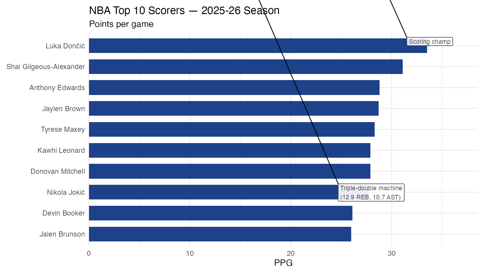
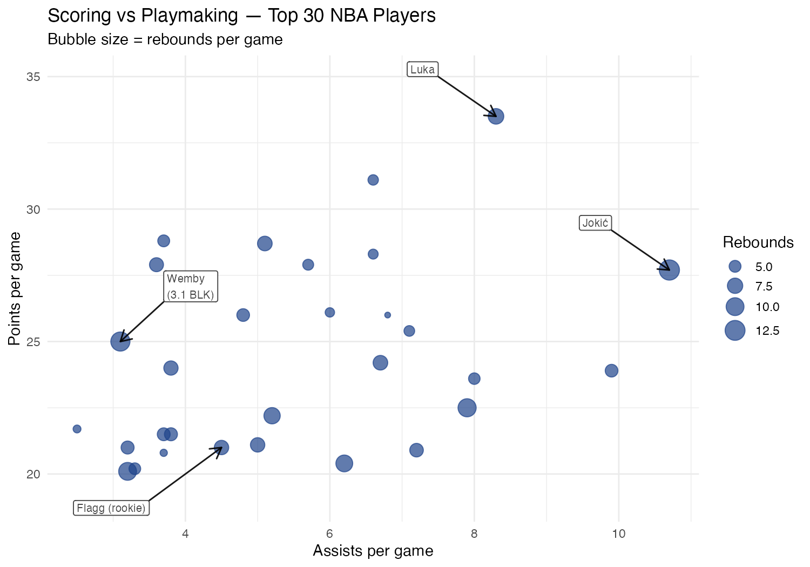
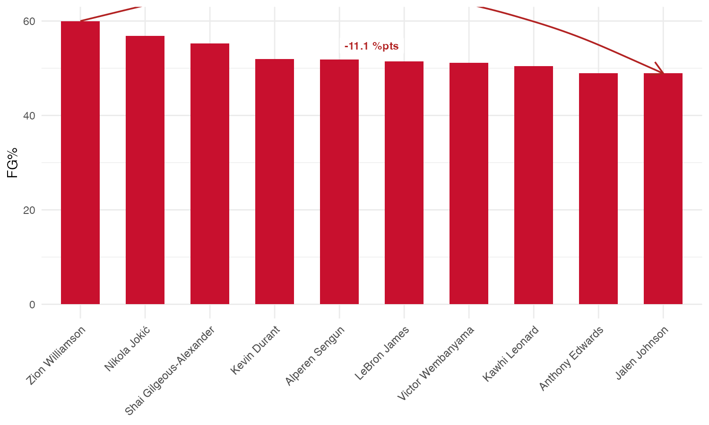

Three charts built with ggmemo on NBA stats data. Each shows a different annotation style.

Horizontal bar chart with annotate_callout() highlighting Luka Dončić as scoring champ
and Nikola Jokić's triple-double averages. Shows coord_flip() compatibility.

Bubble scatter plot (size = rebounds) with four annotate_callout() labels:
Luka and Jokić at the top, rookie Cooper Flagg at the bottom, and Wemby's 3.1 blocks per game.

annotate_change(format = "points") shows the 11.1 percentage-point gap
between Zion Williamson (60.0%) and Jalen Johnson (48.9%).